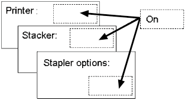

Intended audience: шифрувальники XML та XHTML/HTML (використовуючи редактори або скрипти), розробники скриптів (PHP, JSP, і т.д.), дизайнери сайтів, та інші програмісти.
У цій статті ми розглянемо особливості проектування та розробки, які можуть викликати серйозні проблеми для перекладу контенту. Багато програмістів і дизайнерів вирішили, що якщо певний рядок використовується в багатьох місцях, то вони будуть використовувати копії одного і того ж рядка, а не реалізовувати багато однакових рядків. Відчутною перевагою цього є заощадження пам'яті, для забезпечення узгодженості в джерелі й, іноді, щоб зекономити на вартості перекладу.
Це не обов'язково погано повторно використовувати рядки. Деколи дуже добре попросити перекладача перекласти рядок відразу, а не 50 разів потім. Хитрість в тому щоб знати, що є гарним прикладом для повторного використання, а що ні.
Якщо ви помилитеся, ви можете створити нездоланні перешкоди для хорошої локалізації.
У прикладі, наведеному нижче, дизайнер вирішив скопіювати один рядок Англійською On для кількох різних місць в
користувацькому інтерфейсі, а не створювати три окремі екземпляри рядка.

На іспанській мові, в той час як printer, як правило, це encendida, stacker буде encendido і stapler options буде activadas.
Якщо є тільки єдиний доступний варіант вираження Англійського рядка On, то ці варіації не можна буде виразити. Тому неможливо отримати правильний переклад, і якість Іспанських користувальницьких інтерфейсів серйозно порушена.
Ці відмінності виникають через спосіб домовленості і зміну концепції відображення в перекладі та їх не можна уникнути. Іспанське слово для On можна перекласти принаймні 12 способами: activado, conectado, encendido, activada, conectada, encendida,
activados, conectados, encendidos, activadas, conectadas та encendidas.
Ключ до вирішення питання, чи варто повторно використовувати рядок - знання того факту, чи буде чи не буде рядок використовуватися в різних контекстах.
У багатьох мовах такий прикметник, як none (жодний) зазвичай погоджується з його темою. Давайте припустимо, наприклад, що слово none використовується три рази в тексті повідомлення. Якщо кожне використання відноситься до одного з варіантів: тіні, лінії й колір фону, то він використовується в трьох
різних контекстах і тому повинно бути три різних рядки. Проте, якщо три використання коли-небудь використовувалися тільки для позначення тіней, це мало б
тільки один контекст і тому буде гарним кандидатом для повторного використання.
Наступні приклади взяті з реального продукту. Команда продукту розробила набір повідомлень представлений списком рядків, вони думали про повторне використання для групи локалізації, яка представила такі відгуки.
Будь-яке слово, яке змінить свою форму через домовленість є поганим кандидатом — наприклад, всі прикметники. Наступні рядки в наборі повідомлень, що містять тільки прикметники:
Багато звичайних слів, також піддаються відмінностям в перекладі згідно до контексту через різне відображення концепції між мовами. Ось деякі приклади рядків, які були поганими кандидатами для повторного використання:
Ось кілька пояснень того, чому існують проблеми з цими непридатних умовами.
Час в Німецькій може виражатися як Uhr для поточного часу - дев'яти годин, але, як Dauer для тривалості, коли файл завантажувався дев'ять годин.
Скидання з'являється у якості технічного слова, але це особливий випадок. Воно має два переклади на Голландську мову. Загальний переклад для цього терміну - Herstel. Проте, коли мова йде про Скидання Системи, відповідний переклад буде Herstarten або Herstart. Це ілюструє корисність мати групу локалізації, яка розглядає рядки, які ви запропонували для повторного використання, оскільки для розробника, який не розмовляє цією мовою було б важко виконати це.
Низький матиме різні закінчення в Французькій і Німецькій мовах в залежності від того чи він посилається на щось єдине або множинне і щось чоловіче, жіноче або (в Німецькій мові) середнього роду. Це стосується більшості прикметників.
Жодний Не забувайте, що це, як правило, погоджується з предметом по роду і числу.
Вставити до того як почнеться робота не має об'єкта, тобто, він не встановлює те, що ви вставляєте. В таких мовах, як Японська і Німецька “what” може привести до різних перекладів вставки слова.
Більшість технічних слів є достатньо безпечними кандидатами(але дивіться попередній приклад Скидання).
Будь-яка окрема фраза така як закінчене речення або заголовок, ймовірно, буде безпечним.
Будь-яке слово — навіть прикметник — є гарним кандидатом, поки воно завжди використовується тільки в одному контексті.
Ось кілька прикладів хороших кандидатів для повторного використання з того самого огляду продукту.
Скасування Використане 48 разів, але завжди щоб скасувати діалогове вікно в цьому продукті. (Якби воно було використане, щоб скасувати якусь операцію, необхідні були б додаткові рядки.)
Відкрийте передні двері Використане 16 разів, але окреме речення.
Застряглий оригінал Використане 14 разів, але, хоча оригінал є прикметником, він завжди відноситься до оригінала документа в цьому продукті.
Подача паперу Використане 4 рази, але досить технічне і специфічне, щоб мати один переклад.
Рядки повинні повторно використовуватися там, де текст завжди використовується в однаковому контексті або там, де рядок є окремим, незалежним реченням або фразою.
Повторно використані рядки не повинні посилатися на більше ніж один текстовий, графічний або концептуальний контекст.
Якщо ви сумніваєтесь щодо того, чи рядок є гарним кандидатом для повторного використання, не використовуйте його. Краще створіть окремі рядки. Якщо маєте попросити пораду експертів із локалізації, то знайте, що це часто може бути корисним.
Якщо повторне використання рядка відображатиметься різними розмірами в відображувачах фіксованого розміру, переконайтесь що весь переклад буде вписуватися в вікно відображення найменшого розміру. Пам'ятайте також, що текст, ймовірно, зростатиме при перекладі з Англійської та Китайської мов на інші мови.
Повторне використання рядка дуже часто спостерігається спільно з складеними повідомленнями. Це, як правило, може буди проблемою коли змінні підрядки в складених повідомленнях використовуються спільно з більш ніж одним батьківським рядком.
Оптимізація використання пам'яті за рахунок зниження кількох зразків того ж самого рядка до одного, що можна застосувати для всіх рядків - навіть прикметники, але це повинно бути зроблено після перекладу, а не до. Крім того, це слід зробити на основі принципу: мова відповідна до мови. Це означало б, наприклад, що слово On оптимізоване для одного рядка на Англійській, але для трьох чи більше рядків на Іспанській мові.
Робота зі складеними повідомленнями Повторне використання рядка, часто виникає при роботі з складеними повідомленнями.
Related links, Authoring HTML & CSS